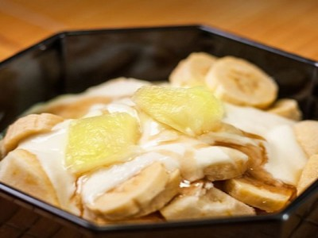

|  |
Food's name: Pickled Banana Yogurt▸ Ingredients:
▸ Time to prepare: 10 minutes ▸ Approx quantity: 1 large bowl |
▸ Detailed recipe:
- Bananas you peeled and cut into round pieces, peeled apples, diced or sliced to taste, roasted peanuts close to the skin, and then pounded.
- Put the apples and bananas in the freezer for about 30 minutes to solidify. Then put the yogurt in the bowl of banana and apple mixture and mix well. Add a few slices of pineapple or mango on top (if you like) then sprinkle with peanuts and enjoy.
=> So we have finished the banana yogurt pickle dish. Banana pickles are delicious, sweet and sour, harmonious. You can use this dish for dessert or eat in the morning to provide energy!
▸ Calories and related information: